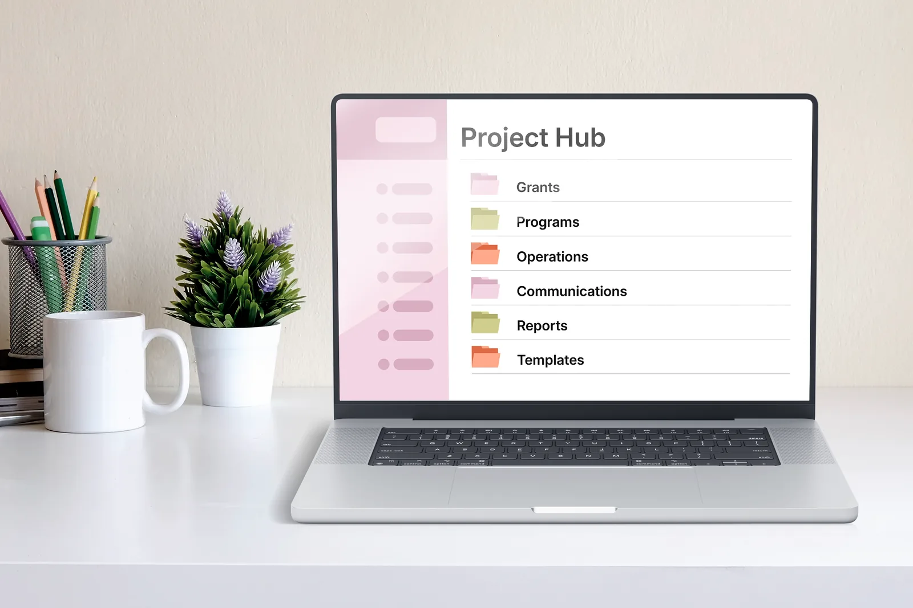
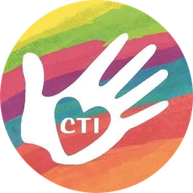

Important information takes too long to find
When information is spread across inboxes, spreadsheets, folders, and individual team members, valuable time gets spent searching and asking instead of moving work forward.
Stronger systems. Brighter impact.
I organize and streamline recurring administrative work, build practical operational systems, centralize information, and create reliable processes teams can actually maintain.

Selected organizations I’ve supported across operations, grants, communications, programs, and systems.

Care Through Touch InstituteFamiliar challenges. Real impact.
When information is spread across inboxes, spreadsheets, folders, and individual team members, valuable time gets spent searching and asking instead of moving work forward.
Without clear systems and ownership, the same information gets recreated, updated in multiple places, or handled twice. That wastes time and limited organizational resources.
Important documents, past work, data, and organizational knowledge can disappear inside cluttered systems, making teams recreate work or miss information that could have supported better decisions.
When recurring work isn’t documented or centralized, handoffs become harder, continuity suffers, and teams carry more administrative knowledge in their heads than they should.
Small inefficiencies add up. Repetitive tasks, unclear workflows, and constant information retrieval can contribute to burnout and take attention away from programs, fundraising, planning, growth, and the mission itself.
Different organizations. Different needs. The same goal: systems that work.
No two organizations operate exactly the same way. I tailor each project to your team, your tools, and the recurring work that takes up the most capacity.
A complete reorganization of your Drive or file-management system, including clearer folder structures, naming conventions, filing systems, and master documents.
Clear, centralized trackers for programs, contacts, projects, outreach, data, deadlines, and other information your team needs to manage consistently.
Practical systems for recurring responsibilities, deadlines, scheduling, reminders, and planning ahead.
Straightforward guides, checklists, and documentation that make recurring processes easier to follow, share, and hand off.
Reorganizing website pages, updating copy and information, improving navigation, and implementing changes on platforms such as Wix and Squarespace.
Systems for both sides of the funding process, from managing opportunities, applications, deadlines, and reporting to organizing applicants, grantees, reviews, decisions, and award tracking.
Reusable templates, master documents, agreements, email language, and other tools that reduce repetitive work and make processes more consistent.
Simple systems for collecting information, preparing updates, tracking progress, and supporting recurring internal or external communications.
A simple, collaborative process.
We look at your current systems, recurring work, and where friction is showing up.
Together, we identify the systems that would create the most clarity and capacity.
I design and build the agreed tools, workflows, documentation, and structure.
We test the systems together, make adjustments, and make sure your team knows how to maintain them.
Every Systems for Mission project is scoped around your organization’s priorities, existing tools, and the systems that will create the most value.
After an introductory call, I’ll recommend a focused project scope, timeline, and fixed project fee.
Most projects are designed to be completed within 4–6 weeks.
Book a Systems Call (opens in a new tab)Real organizations. Real results.
Care Through Touch Institute
Built a centralized grant pipeline, deadline calendar, funder organization system, and application workflow to make opportunities easier to evaluate, plan, and manage.
Open full preview: Grant Management SystemBuddhist Center of Steamboat Springs
Centralized programming, scheduling, communications, volunteer coordination, and recurring administrative workflows to create greater consistency and reduce administrative load.
Open full preview: Operations SystemJewish Solar Challenge
Reorganized the website structure, updated page content and organizational information, clarified navigation, and implemented the revised content to make the site easier to understand and maintain.
View live website (opens in a new tab)From people I’ve worked with
“Tali is remarkably efficient and organized, with a real gift for seeing what needs to be done and building systems that make work run more smoothly. She also has a strong eye for graphics and web design, bringing clarity and thoughtful systems thinking to every project.”
Systems for Mission is designed for nonprofits, foundations, mission-driven organizations, and other small teams that need stronger systems to support the next stage of their work.
That might mean:
I bring more than 10 years of experience across nonprofit and mission-driven work, spanning operations, grants, communications, programs, and administration.
Throughout those roles, I’ve focused on creating clearer systems that reduce friction and make important work easier to manage.
Let’s talk about where stronger systems could create more capacity for your team.